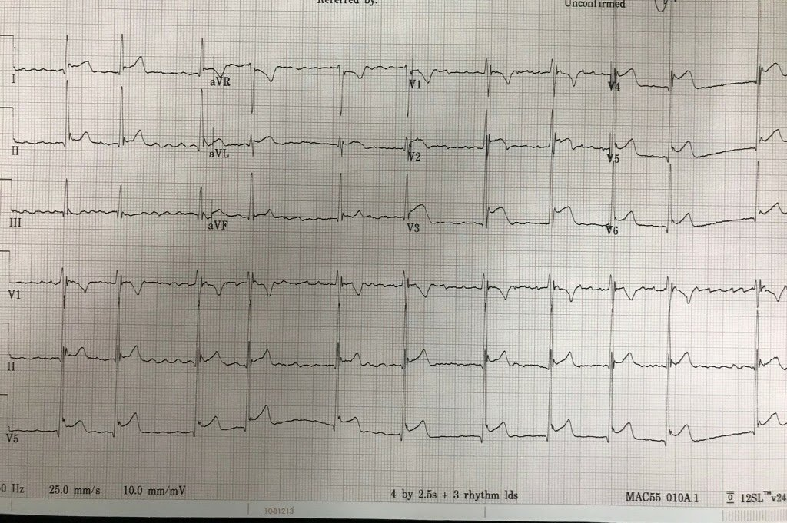
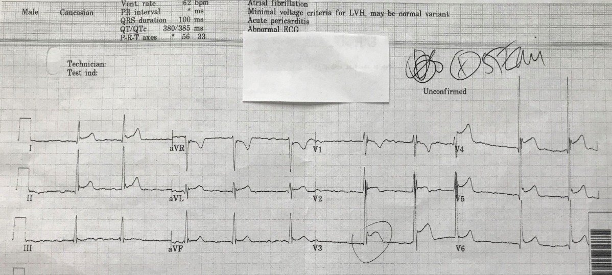
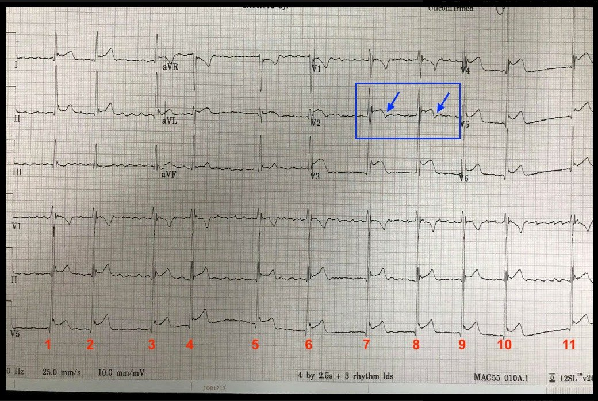

26/06/2018 — Hồi hộp đánh trống ngực và tức ngực: có nên kích hoạt phòng thông tim (hay cho tiêu sợi huyết)?
Bản dịch tiếng Việt của bài "Palpitations and Chest Tightness: Should You Activate the Cath Lab (or Give Thrombolytics)?" – Dr. Smith’s ECG Blog. Giữ nguyên toàn bộ 5 hình ảnh của bản gốc.
Ca này do Jessica Carmichael gửi đến, bà là bác sĩ cấp cứu đang tại ngũ ở Bệnh viện Cộng đồng Quân đội Irwin (Irwin Army Community Hospital) tại Fort Riley, Kansas. Bà được đào tạo tại Trung tâm Y khoa Quân đội Brooke (Brooke Army Medical Center).
Điện tâm đồ và ca bệnh
Tôi được gửi điện tâm đồ này kèm một số thông tin, nhưng tôi chỉ nhìn điện tâm đồ trước khi đọc phần chữ:


Câu trả lời của tôi như sau:
“Tôi chưa đọc nội dung email của bạn, nhưng tôi cho rằng đây là ST chênh lên biến thể bình thường lành tính.”
(Ngoài ra còn có rung nhĩ không kèm đáp ứng thất nhanh.)
“Bây giờ tôi sẽ đọc phần chữ của bạn:”
Đây là phần chữ:
“Điện tâm đồ dưới đây do một cựu bác sĩ nội trú gửi cho tôi hôm qua, và có vẻ rất đúng lúc khi xét đến bài viết gần đây của anh [You Diagnose Pericarditis at your Peril (at the Patient’s Peril!)]. Bác sĩ nội trú này đã bị bên tim mạch trách mắng vì kích hoạt phòng thông tim (cath lab), do bác sĩ tim mạch cho rằng đây rõ ràng là viêm màng ngoài tim. Tôi đã lo ngại vì không thực sự nhận ra được sóng J hay sóng S ở V3 [ghi chú: thực ra có cả sóng J lẫn sóng S ở V3, nên KHÔNG có biến dạng phần cuối QRS]. Vì không có tỷ lệ bỏ sót nào là chấp nhận được đối với nhồi máu cơ tim, tôi cho rằng việc kích hoạt phòng thông tim là hoàn toàn phù hợp.”
Đây là câu trả lời của tôi:
Đây KHÔNG phải là viêm màng ngoài tim. Đây là biến thể bình thường.
Kích hoạt là hợp lý. Thay vào đó, tôi sẽ làm siêu âm tim có cản âm để chứng minh không có rối loạn vận động thành.
Bình luận: Điện thế QRS rất cao, sóng J rất rõ ở nhiều chuyển đạo và khoảng QT ngắn khiến khả năng tắc LAD là rất thấp. Nhưng điện tâm đồ này quả thực đáp ứng “tiêu chuẩn” STEMI ở nhiều chuyển đạo.
Đây là toàn bộ bệnh sử:
“Thông tin cơ bản: nam giới người Mỹ gốc Phi 28 tuổi, có tiền sử WPW, đột ngột xuất hiện hồi hộp đánh trống ngực và tức ngực mức 5/10 khi nghỉ. Đã được triệt đốt năm 2016. Từ đó đến nay không có vấn đề gì. Khi đến viện không có triệu chứng kèm theo nào khác khi hỏi theo hệ cơ quan (ROS), ngoại trừ choáng váng. Phủ nhận sử dụng ma túy, xét nghiệm ma túy trong nước tiểu (UDS) âm tính. Không có tiền sử gia đình. Thể lực tốt. Huyết áp tâm thu 112. Độ bão hòa oxy bình thường. Dùng thuốc chẹn beta hằng ngày. Phủ nhận bệnh gần đây, đau ngực khi gắng sức hay sốt. Không có yếu tố nguy cơ thuyên tắc phổi.”
“Phát hiện rung nhĩ mới xuất hiện với nhiều điện tâm đồ đáng lo ngại. Tần số từ 50 mấy đến 80 mấy, không đều.”
“Điện tâm đồ cũ có tái cực sớm, nhưng theo tôi điện tâm đồ mới thay đổi mạnh mẽ/khác biệt hơn nhiều.”
“Đã báo động STEMI và trao đổi với bên tim mạch, ban đầu họ nói với tôi rằng đây là các dấu hiệu tái cực sớm. Tôi đề nghị họ đánh giá điện tâm đồ. Sau đó, họ nhận xét rằng trông giống viêm màng ngoài tim, điều mà tôi phản bác là không phù hợp với bệnh cảnh lâm sàng. Anh ấy thừa nhận điện tâm đồ bất thường nhưng vẫn hoài nghi. Chúng tôi tiến hành theo phác đồ của mình: cho bệnh nhân heparin, TNKase, plavix, aspirin (ASA) và chuyển bằng đường hàng không đến bệnh viện tuyến ngoài.”
“Troponin ban đầu, khoảng 1 giờ sau khởi phát triệu chứng, âm tính. CK-MB tăng nhẹ, khoảng 2.5. CK 1300. Sau nhận định viêm màng ngoài tim của bên tim mạch, tôi cho làm thêm CRP và tốc độ máu lắng (ESR) sau khi bệnh nhân đã đi, kết quả đều âm tính. Tiếc là tôi đã không nghĩ tới việc làm siêu âm tim tại giường trước khi bệnh nhân đi.”
“Sau đó bên tim mạch nhắn tin cho tôi, nói rằng bệnh nhân ổn, vẫn đang rung nhĩ, và họ cho rằng điện tâm đồ của bệnh nhân không thay đổi so với bản cũ và phù hợp với tái cực sớm. Hoãn thông tim. Tôi không nhận được báo cáo về việc có làm troponin lần thứ hai hay không.”
Anh có muốn nhận thêm thông tin theo dõi không? Tôi có khoảng 4 điện tâm đồ trong thời gian ngắn bệnh nhân ở khoa cấp cứu của tôi, cùng một điện tâm đồ cũ trong hồ sơ của bệnh nhân.
Tôi thấy bài viết gần đây trên blog rất thú vị khi đặt cạnh ca này!
[You Diagnose Pericarditis at your Peril (at the Patient’s Peril!)] (Chẩn đoán viêm màng ngoài tim là tự chuốc lấy rủi ro (rủi ro cho bệnh nhân!))
Jessica Carmichael, MD
Phân tích thêm:
Dr. Carmichael đã ghi 4 điện tâm đồ liên tiếp và tất cả đều không thay đổi. QTc trong khoảng từ 385 ms đến 402 ms.
Đây là một trong số đó:


Lưu ý máy tính đọc là viêm màng ngoài tim.
Trên các điện tâm đồ giống hệt khác trong cùng loạt, máy tính đọc là ***STEMI***
Điều gì sẽ xảy ra nếu chúng ta dùng công thức 3 biến hoặc 4 biến?
STE60V3 = 4 mm
RAV4 = 33 mm
QTc = 400 ms
QRSV2 = 15 mm
Công thức 3 biến: = 17.62, thấp hơn nhiều so với điểm cắt 23.4
Công thức 4 biến: = 13.93, thấp hơn nhiều so với điểm cắt 18.2
Các công thức này hẳn đã dự đoán ST chênh lên biến thể bình thường lành tính (tái cực sớm).
Kết cục
Chụp mạch vành bình thường.
Tất cả các lần troponin đều âm tính.
Nhân tiện, đây KHÔNG phải là viêm màng ngoài tim.
Những điểm cần học:
1. Trách mắng một bác sĩ khác, người đang làm hết sức mình vì bệnh nhân, là điều không bao giờ chấp nhận được. Rõ ràng Dr. Carmichael đã chăm sóc bệnh nhân rất xuất sắc.
2. Điện tâm đồ này rõ ràng đáp ứng “tiêu chuẩn” STEMI là ST chênh lên 2.5 mm ở 2 chuyển đạo trước tim phải liên tiếp, ngoài ra còn đáp ứng tiêu chuẩn STEMI 1 mm ở các chuyển đạo bên.
3. Có những đặc điểm có thể gợi ý cho bạn ST chênh lên lành tính: điện thế cao, sóng J rất rõ và QT ngắn
4. Hãy dùng các công thức. Chúng rất hữu ích. (Nhân tiện, các công thức này nay đã được thẩm định ngoài trên một đoàn hệ lớn; đang chờ công bố. Công thức 4 biến nay đã được chứng minh là tốt nhất!!)
5. Có thể tránh chụp mạch vành bằng cách làm siêu âm tim có cản âm chính thức. Nếu Dr. Carmichael có sẵn phương tiện này và có thể thực hiện, kết quả hẳn sẽ cho thấy không có rối loạn vận động thành. Điều đó sẽ loại trừ tắc LAD là nguyên nhân gây ST chênh lên, và bà đã có thể tránh dùng TNK-tPA vốn có khả năng gây hại.

———————————————————–
Bình luận của KEN GRAUER, MD (26/6/2018):
———————————————————–
Một ca bệnh và bài viết thú vị do Dr. Jessica Carmichael gửi đến — kèm những Bình luận xuất sắc của Dr. Smith. Mối lo ngại là ST chênh lên được cho là nhiều hơn đáng kể so với một bản ghi trước đó. Vì vậy, báo động STEMI đã được kích hoạt. Ban đầu, bên tim mạch nghiêng về viêm màng ngoài tim cấp.
- Theo Dr. Smith — những đặc điểm gợi ý đây không phải OMI cấp ( = nhồi máu cơ tim do tắc (Occlusion-related Myocardial Infarction)) gồm điện thế QRS rất cao; sóng J rất rõ ở nhiều chuyển đạo; QTc ngắn — và giá trị cực thấp khi tính theo công thức 3 biến và 4 biến của Dr. Smith. Dù vậy, khi có ST chênh lên kèm triệu chứng mới — chụp mạch vành chẩn đoán là hợp lý. Dù vậy, với các đặc điểm điện tâm đồ nêu trên — nếu làm siêu âm tim trong lúc có triệu chứng mà không thấy rối loạn vận động thành thì đã có thể tránh được thông tim …
Nhằm mục đích thảo luận học thuật — tôi xin bổ sung những suy nghĩ sau:
- Yếu tố chính thúc đẩy việc kích hoạt phòng thông tim là lo ngại rằng ST chênh lên ở Hình 1 đã tăng đáng kể so với một điện tâm đồ trước đó vốn cho thấy tái cực sớm. Về sau, bên tim mạch cho rằng không có thay đổi đáng kể giữa 2 bản ghi. Dù không thể bình luận về sự so sánh này (vì chúng ta không được cung cấp điện tâm đồ cũ) — những lưu ý cần biết có thể ảnh hưởng đến việc so sánh từng chuyển đạo giữa các bản ghi liên tiếp là phải ghi nhận bất kỳ thay đổi nào về: i) trục mặt phẳng trán; ii) tăng tiến sóng R; và, iii) biên độ QRS ở các chuyển đạo. Thay đổi ở bất kỳ đặc điểm nào trong số này đều làm việc đánh giá khác biệt giữa các bản ghi liên tiếp trở nên phức tạp. Rõ ràng, mức độ ST chênh lên thấy ở Hình 1 là rõ rệt (ít nhất 4mm ở chuyển đạo V3). Nhưng biên độ QRS ở các chuyển đạo V3 đến V6 cũng tăng rất mạnh (vượt ra ngoài trang giấy ở chuyển đạo V4, và chồng lấn lên các chuyển đạo lân cận ở V3, V4, V5). Do đó, mức ST chênh lên so với biên độ QRS ở cùng chuyển đạo, xét theo tỷ lệ, không quá mức như vậy. Trên bản ghi trước đó, biên độ QRS có lớn tương đương như ở đây không?
- Bệnh sử là MẤU CHỐT trong ca này. Như Dr. Carmichael nêu — “đột ngột xuất hiện hồi hộp đánh trống ngực và tức ngực khi nghỉ” không phải là bệnh sử điển hình của viêm màng ngoài tim cấp. Một điều hay bị bỏ qua là các rối loạn nhịp mới khởi phát (gồm cả các nhịp SVT nhanh hơn, cũng như AFib chậm) có thể đến khoa cấp cứu (ED) với biểu hiện khó chịu ở ngực. Sẽ rất đáng quan tâm nếu biết thêm về tính chất cảm giác đè nặng ngực và hồi hộp của bệnh nhân này — bao gồm cả hai triệu chứng có bắt đầu cùng lúc không, cả hai có còn tiếp diễn khi ở khoa cấp cứu không, và bệnh nhân có nhận biết được lúc nào tim mình đập đều so với lúc nào không đều hay không. Những thông tin bệnh sử như vậy đôi khi tỏ ra vô giá trong việc gợi ý khi nào khó chịu ở ngực có thể là hậu quả của một rối loạn nhịp.
- Một đặc điểm điện tâm đồ nữa chống lại chẩn đoán viêm màng ngoài tim cấp là dấu hiệu ở chuyển đạo V2 cho thấy sóng T bắt đầu đảo ngược cùng lúc với việc vẫn còn ST chênh lên đáng kể ở chuyển đạo này (các mũi tên XANH trong hình chữ nhật màu xanh ở Hình 1). Trong diễn tiến điển hình của viêm màng ngoài tim cấp — đoạn ST trở về đường nền trước rồi sóng T mới đảo ngược. Ngược lại — sóng T đảo ngược cùng lúc với ST chênh lên thường gặp trong nhồi máu cấp, và có thể thấy ở một số loại biến thể tái cực.
- Những đặc điểm điện tâm đồ khác chống lại OMI cấp — là ST chênh lên lan tỏa đến mức nào, và việc không có ST-T chênh xuống soi gương. Phải thừa nhận rằng ST chênh xuống soi gương không phải lúc nào cũng có trong OMI — và có thể có OMI chồng lên một bản ghi nền có tái cực sớm … Đây là lý do việc có sẵn siêu âm tim tại khoa cấp cứu vào lúc có triệu chứng lại quý giá đến vậy. Xét đến việc phần lớn đặc điểm điện tâm đồ trong ca này chống lại OMI — việc không có rối loạn vận động thành trên siêu âm tim làm trong lúc có triệu chứng về cơ bản sẽ loại trừ OMI.


Suy nghĩ cuối cùng: Có nhịp theo nhóm (group beating) ở Hình 1 không? Nam giới 28 tuổi này có tiền sử WPW đã được triệt đốt — nhưng có lẽ vẫn ở nhịp xoang cho đến trước ngày nhập viện. Hiện bệnh nhân đang AFib với tần số tim thấp đến bất ngờ đối với rối loạn nhịp mới khởi phát loại này. Liệu liều thuốc chẹn ß bệnh nhân đang dùng có đủ cao để làm tần số tim chậm đến mức này khi AFib mới xuất hiện? Hay có thể có blốc Wenckebach ở đường ra khỏi nút AV, dẫn đến chu kỳ ngắn-dài tương tự nhau ở 5 nhát đầu tiên trong Hình 1 — với tính chu kỳ Wenckebach cũng thấy ở gần cuối dải nhịp (tức là, các khoảng R-R ngắn dần từ nhát #7 đến 10; và các khoảng ngưng có thời gian tương tự nhau giữa các nhát #2-3; 4-5; 6-7; 10-11, tất cả đều ngắn hơn hai lần khoảng R-R ngắn nhất).
- Rõ ràng, cần theo dõi lâu hơn mới biết chắc — và gợi ý nhịp theo nhóm mà chúng ta thấy có thể hoàn toàn là trùng hợp. Nhưng thực sự ĐÁNG nêu ra rằng việc nhận biết nhịp theo nhóm khi có rung nhĩ hoặc cuồng nhĩ nên gợi ý khả năng dẫn truyền Wenckebach ở đường ra khỏi một hoặc nhiều tầng trong nút AV.